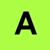
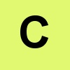

CSS Kaydırma (float)
Katmanlarla çalışmak ve resim galerileri oluşturmak için HTML elementlerini sağa ve sola doğru kaydırmamız gerekebilir. İşte css kodu float bunu yapmamızı sağlıyor:Elementler Nasıl Kaydırılır?
Elementler yatay yönde sağa ve sola doğru kaydırılabilir. Yani aşağı doğru kaydırma söz konusu değil.Kaydırılan element, sağ ya da soldaki elementin sağından veya solundan başlar. Yeni kaydırılan elementler, ilk önce kaydırılan elementten sonra gelir. Dolayısıyla önceden kaydırılmış elementlerde bir değişiklik olmaz.
Örneğin bir resim için float: right; özelliği belirttiysek yazılar sağ tarafta yer alacak bu resmin solunda yer alacaktır.
Elementleri Yan Yana Sıralamak
Resim galerilerini görmüşsünüzdür. Resim sayfalarına giden küçük görüntüler sayfada yan yana sıralanırlar. Bunlar birbirine eşit olmalı ki kaydırıldığında birbiriyle uyumlu olsunlar. Örneğin küçük görüntümüz:
.thumb
{
float: left;
width: 110px;
height: 110px;
margin: 5px;
}


Yukarıdaki örnek kodda yer alan özelliğe sahip resimleri sıraladık. Görüldüğü gibi her biri diğerinin sağına kaydırıldı ve aralara 5x2 (sağ, sol) piksellik boşluk (margin) verildi.
Kaydırmayı Sonlandırmak
clear: both; kodu artık kaydırmanın sonlandığını ve bundan sonra geçerli olmayacağını bildirmemize yarar.
.text_line
{
clear: both;
}
Kaydırmalı bir nesnenin hemen ardından class="text_line" kullanılmış bir element yer alıyorsa, bu element kaydırma olayının dışında tutulacak ve normal şekilde sayfaya yerleştirilecektir.
Temel Bilgiler :
Css Stilleri:
Kenarlıklar:
- Css Kutu Modeli
- Css Kenarlıklar (Border)
- Css Dış Kenarlık (Outline)
- Css Dıştan Boşluk (Margin)
- Css İçten Boşluk (Padding)